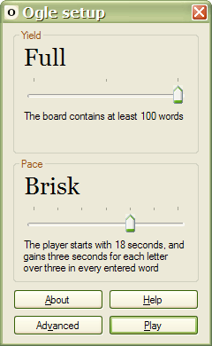

Setup
The Setup dialog appears when you start Ogle:

Yield
The Yield slider sets the number of words to be hidden in the letter grid. Adding more words produces longer and easier games:
| Yield | Word count |
| Sparse | Up to 50 |
| Adequate | 50 to 100 |
| Full | 100 or more |
Pace
The Pace slider determines how much time you will have. Each game starts with a small amount of time on the clock. As valid words are entered, time bonuses are awarded:
| Pace | Start time | Bonus length |
| Plodding | 48 seconds | 8 seconds |
| Slow | 36 seconds | 6 seconds |
| Unhurried | 30 seconds | 5 seconds |
| Measured | 24 seconds | 4 seconds |
| Brisk | 18 seconds | 3 seconds |
| Fast | 12 seconds | 2 seconds |
| Dizzying | 6 seconds | 1 seconds |
For every letter over three in a valid word, one bonus is added. At the unhurried pace, a six-letter word adds fifteen seconds:
(6 letters - 3) × 5 seconds = 15 seconds
At the dizzying pace, a four-letter word adds one second:
(4 letters - 3) × 1 seconds = 1 second
Followed words don't add time bonuses, so there is no need to enter them.
Other controls
- The About button opens the Ogle About dialog;
- The Help button displays these help pages in your browser;
- The Advanced button shows the Advanced Setup dialog;
- The Play button loads the Play dialog and starts the game.